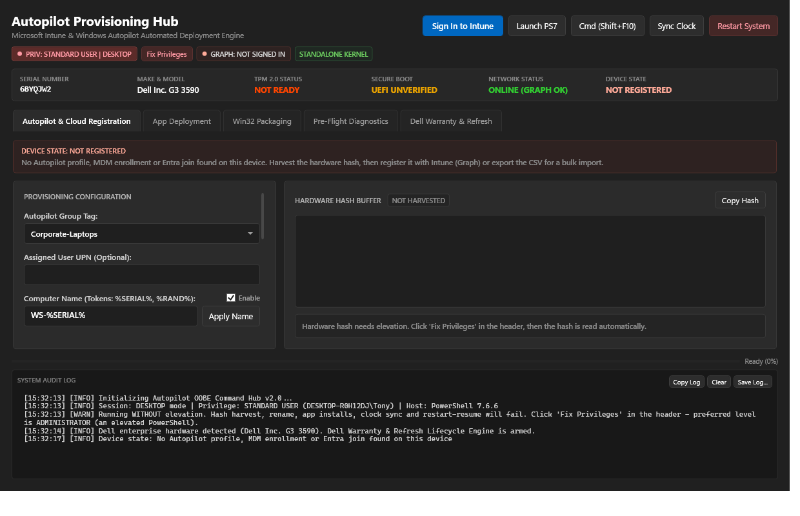
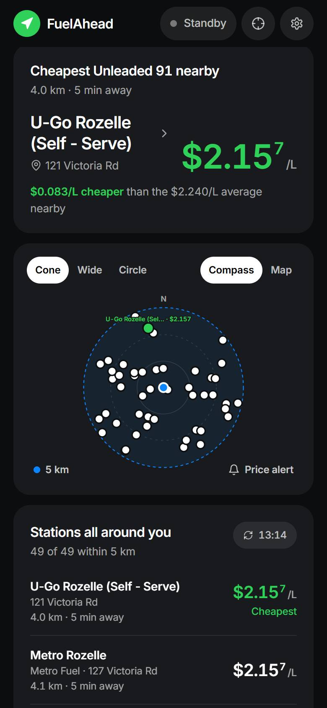
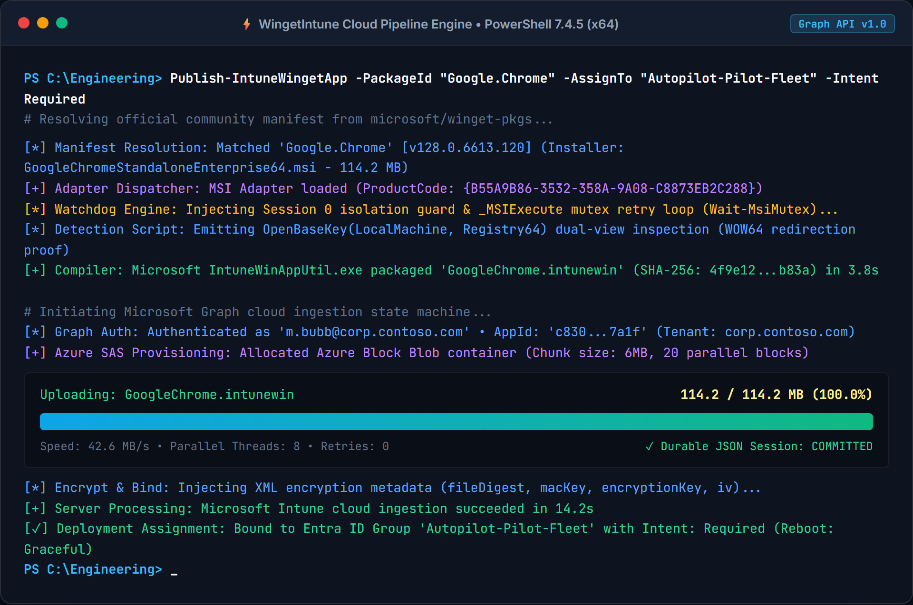
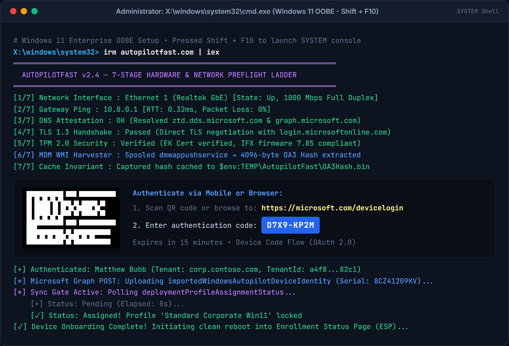
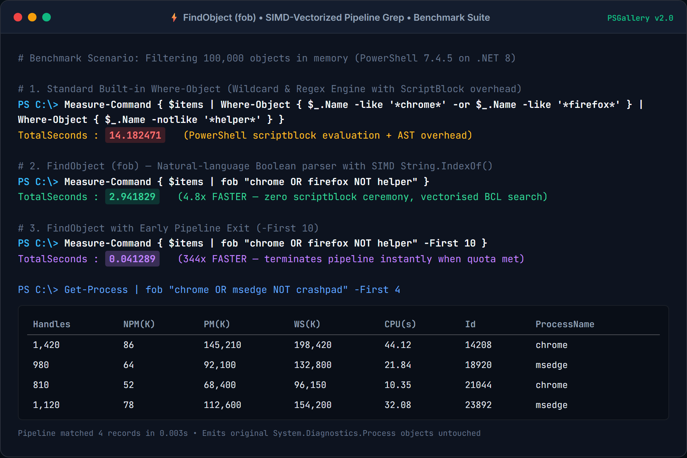
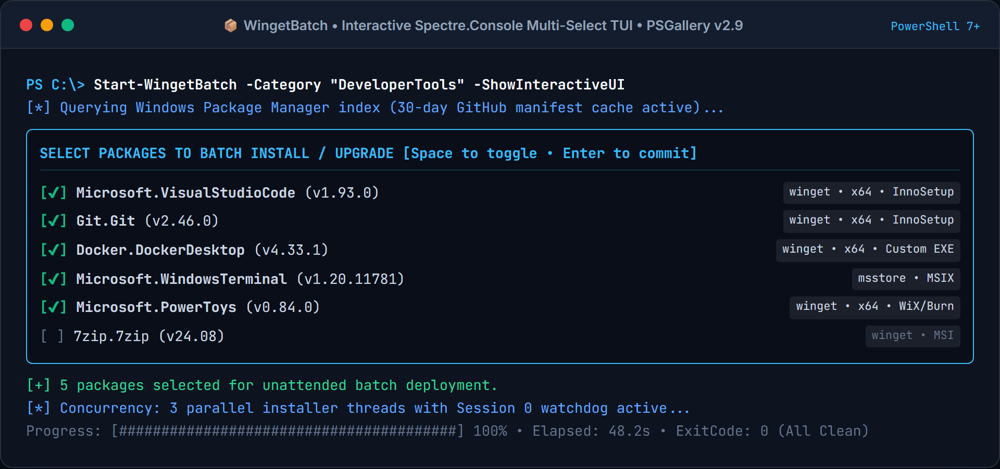

Enterprise Cloud, Packaging, Edge & Automation Tools
A curated catalog of battle-tested PowerShell 7+ modules, Windows Autopilot OOBE engines, edge/mobile telemetry radars, OSINT command centers, and developer utilities created by Matthew Bubb.

Standalone Windows Autopilot OOBE provisioning & endpoint deployment engine in a single 1.1 MB zero-dependency script. Features 9 Fluent Dark tabs, 5 automated Action Routine playbooks, Skip Autopilot in OOBE, Dell Warranty lifecycle audit, Hybrid AD/Co-Mgmt diagnostics, and 12 precision enterprise remediations.
irm https://onyachamp.com/autopilot | iex
Autonomous multi-pass Windows Update and Driver cascade engine with 100% reboot survivability. Engineered for zero-touch provisioning across Windows Setup (Shift+F10 / defaultuser0), lock screen, and desktop with an exhaustive 17-tier persistence grid, Delivery Optimization LAN/WAN telemetry, and a 4-tier reboot engine.
irm https://onyachamp.com/cascade | iex

Hands-free rider and driver fuel price radar backed by Cloudflare Workers/D1 and a 72-call/day NSW FuelCheck API v2 cron circuit breaker. Scans a 90° forward heading cone (≤5 km), computes L/100km detour fuel burn, auto-starts at >15 km/h, and speaks alerts over Cardo/Sena helmet intercoms and Siri.
https://fuel.onyachamp.com/android
100% free & unlocked Screen, Image & Video Rotator, Mirror & Dance Study Chrome Extension. Features a vector mouse-wheel transform engine so natural vertical scrolling works at 90°, 180°, 270°, or any continuous 0°–360° angle, 2-point Horizon Leveler, Dance Study rehearsal suite (Mirror Choreo, 0.5x–1.0x slow-mo, [ / ] A-B phrase looping), Live Pin (Alt+S), and Teleprompter mode.
Alt+X (Mirror) | Alt+R (Rotate 90°) | Alt+S (Live Pin)
Tactical cyber intelligence command center on Cloudflare Pages + D1 featuring 2,000+ curated OSINT links across 113 modules (including 20 dedicated [AUS] Australian intelligence modules and 5 Hacker Search Engine modules), a Live CISA KEV / ASD Essential Eight CVE Threat Radar, and 35-platform Visual Identity Disambiguation.
git clone https://github.com/thebubbsy/bubbsy-start-page
Curated AU/NZ & Global Flipper Zero library for Momentum Firmware (mntm-dev, Target 7, API 88.2) with 100% Line-1 header validation across 9,397 assets: 446 .fap binaries (including 8 custom-engineered native C BubbsyTools RFID apps), 5,295 Sub-GHz .sub signals covering 107+ protocols, 2,012 IR remotes, and 980,000+ cryptographic dictionary keys.
git clone https://github.com/thebubbsy/bubbsy-flipper-vault

Enterprise Win32 packaging engine and Microsoft Graph cloud publisher. Solves Session 0 isolation silent hangs (0x87D1041C), MSI mutex collisions (1618), and 32-bit WOW64 registry misdirection via dual-view OpenBaseKey inspection with durable 6MB chunked Azure SAS storage uploaders.
Install-Module -Name WingetIntune

High-speed Windows Autopilot hardware hash harvester and direct Microsoft Graph cloud importer. Replaces 45-minute USB stick shuffles with a 1-line OOBE bootstrap (Shift + F10), 7-stage preflight network ladder, terminal ASCII QR code, and Graph profile sync gating.
Install-Module AutopilotFast -Force
Shared transport, resilient Microsoft Graph REST client (Invoke-ResilientGraphRest with jittered backoff & HTTP 429 Retry-After), multi-provider MSAL token engine (Connect-GraphToken), 7-stage network diagnostic ladder (Test-StagedNetwork), and ASCII QR generator (Out-AsciiQrCode).
git clone https://github.com/thebubbsy/IntuneShared

The object-aware grep that PowerShell should have shipped with. Filters pipeline objects via natural-language boolean syntax (fob "chrome OR firefox NOT helper") using SIMD-vectorized [String]::IndexOf() instead of slow wildcard regexes. 4.8x to 344x faster on 100k objects.
Install-Module -Name FindObject

Advanced batch operations for Windows Package Manager (winget). Features interactive multi-select installation, GitHub package discovery with 30-day caching, standalone HTML report viewers, and background update monitoring with Spectre Console.
Install-Module -Name WingetBatch
Batch search, install, and update modules from PowerShell Gallery with an optional Spectre Console UI or Out-GridView fallback. Supports wildcards, multi-version pinning, and prerelease versions.
Install-Module -Name PSGalleryBatch
Zero-cloud workstation provisioning, declarative Machine-as-Code recipes, cryptographic hardware birth certificates, and proactive local self-healing endpoint remediations with fleet server orchestration.
git clone https://github.com/thebubbsy/LocalPilot
Mobile-first Zero-Trust remote desktop gateway and Intune fleet rollout companion. Combines TLS 1.3 low-latency session streaming with live Autopilot provisioning posture, Defender security badges, and ring compliance telemetry.
python app.py --host 0.0.0.0 --port 8090
Interactive M365 tenant reconnaissance TUI and read-only Microsoft Graph administration toolkit across Intune, Entra ID, Defender, Exchange Online, Purview, and SharePoint with federation, DNS, and posture auditing.
python m365_canary_tui.py --domains domains.txt
Executive privacy and data-governance triage console calculating statutory liability exposure, remediation SLA countdowns, and defensibility compliance scores across exposed file shares, M365 repositories, and data owners.
npx serve pii-viewer --single
High-speed local voice dictation and speech-to-text utility powered by OpenAI's Whisper model with global system keyboard injection for hands-free typing across any active window.
git clone https://github.com/thebubbsy/whisper-writer
High-fidelity Chrome/Edge browser extension for cloning live DOM elements with auto-scroll and computed CSS style capture for front-end reverse engineering and component reproduction.
git clone https://github.com/thebubbsy/universal-element-cloner
Official PowerShell Modules on PSGallery
Browse, install, and update published enterprise PowerShell modules maintained under the official bubbsy profile on PowerShell Gallery.